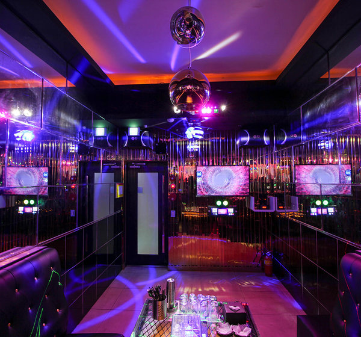

강남 가라오케
프라이빗 룸 · 노래 · 주대 · TC · RT
본문에서 보기 →choicelounge형 허브 + gangnamdalto형 NAP·통계 + classicsalong형 실장 스토리를 하나로. 강남역·역삼·선릉 상권의 가격·초이스·예약을 10년+ 선호부장이 투명하게 안내합니다.
clickn 다점포 대신 co.kr 하부 URL — 검색 의도별 랜딩 (garaoke.clickn #8 패턴 대체)
강남 가라오케는 프라이빗 룸에서 노래와 주류를 즐기는 1종 유흥주점 형태입니다. 강남역·역삼·선릉 접근이 좋고, 회식·접대·친목 모임에 많이 선택됩니다. 하이퍼블릭·풀싸롱과 함께 검색되는 대표 키워드입니다.
주대는 1부·2부 시간대별로 책정되며, TC(매니저 시간)·RT(룸티, 약 5만원)가 추가됩니다. 처음 방문 시 「주대+TC+RT」 3가지만 이해하면 비용 구조가 명확해집니다.

강남 하이퍼블릭은 초이스·매칭 프로세스가 체계화된 업종입니다. 입실 후 5~6명이 한 조로 소개되며, 보통 3라운드까지 선택할 수 있습니다. 1조에서 만족하면 즉시 선택 가능합니다.
퍼블릭·가라오케와 달리 「초이스」가 핵심 차별점입니다. roompang·choicelounge 등 상위 사이트도 하이퍼블릭 섹션을 별도 두는 이유입니다. 가라오케와 비교 시 초이스·룸 프라이버시를 중시하면 하이퍼블릭이 적합합니다.
섹션별 키워드 적재 — thesevensalon·applegangnam 룸 비주얼
클래식 풀싸롱. 첫 방문·회식에 많이 선택.
캐주얼 분위기. 친목·가벼운 자리.
거울·조명 연출 특화 (classicsalong 용어).
오픈형 혼합. 인원 多일 때.
풀싸롱은 고급 프라이빗 룸·인테리어 중심이며, 하이퍼블릭보다 「분위기·룸」에, 하이퍼블릭은 「초이스·매칭」에 무게가 실립니다. 상세: 풀싸롱 전용 페이지
강남 쩜오는 테이블 단위 오픈형 유흥입니다. 프라이빗 룸 기반 가라오케·하이퍼블릭·풀싸롱과 이용·가격 체계가 다릅니다. 가볍게 친목·회식을 즐기려면 쩜오, 프라이빗·초이스를 원하면 룸 기반 업종을 권합니다.
| 항목 | 하이퍼블릭 | 풀싸롱 | 가라오케 | 쩜오 |
|---|---|---|---|---|
| 공간 | 프라이빗 룸 | 고급 프라이빗 룸 | 노래방형 룸 | 오픈 테이블 |
| 초이스 | ● | ● | △ | ✗ |
| 주대+TC+RT | ● | ● | ● | ● |
| 노래·접대 | ● | ● | ● | △ |
| 회식·친목 | ● | ● | ● | ● |
| 구분 | 1부 (약 20:00~01:00) | 2부 (약 01:00~15:00) | 비고 |
|---|---|---|---|
| 주대 | 업장·양주 세트별 | 1부 대비 할인 多 | 강남 주대 |
| TC | 60분 기준 | 동일 구조 | 인원×시간 |
| 룸티(RT) | 약 50,000원 | 약 50,000원 | 룸 사용료 |
| 추가 | 연장·양주 추가 | 업장별 상이 | 정찰제 확인 |

※ 업장별 정찰제·패키지 상이 — 방문 전 확인 권장
10년 넘게 강남 밤문화 현장에서 일해온 선호부장이 직접 쓰는 가이드입니다. 매직미러·셔츠룸·레깅스룸·하이퍼블릭·퍼블릭까지 업종 용어를 그대로 설명해, 처음 방문도 불안 없이 선택할 수 있습니다. 키워드 스터핑·H1=전화번호·과밀 CTA 같은 하위 벤치마크 패턴은 의도적으로 배제했습니다.
| 상호 | 강남가라 선호부장 (GANGARA) |
|---|---|
| 도메인 | gangara.co.kr (.co.kr · 호스팅코리아) |
| 상권 | 서울특별시 강남구 역삼·선릉·강남역 일대 |
| 주소 | 강남구 역삼동·논현동 상권 (예약 시 상세 안내) |
| 지하철 | 강남역 2호선 · 역삼역 2호선 · 선릉역 2·분당 · 신논현역 9호선 |
| 도보 | 역에서 5~10분 (업장별 상이) |
| 영업 | 18:00 ~ 익일 15:00 (1부/2부) · 연중 상담 |
| 1부 | 약 20:00 ~ 01:00 |
| 2부 | 약 01:00 ~ 15:00 |
| 전화 | 010-2594-9736 |
| 예약 | 전화·문자 「인원+시간+인원수」→ 주소·견적 회신 |
| 픽업·주차 | 예약 고객 발렛·픽업 제공 업장 多 |
| 결제 | 현금·카드 (업장별) |
| 허가 | 1종 유흥주점 허가 업장 안내 |
| 서비스 지역 | 강남구 · 서초구 인접 상권 |
1부·2부별 주대+TC+룸티(RT) 구조. (주류)+TC(인원×시간)+룸차지로 이해하면 됩니다.
입실 후 5~6명 조 단위 소개, 보통 3회까지 선택. 1조에서 만족 시 즉시 선택 가능.
풀싸롱은 고급 룸·인테리어 중심, 하이퍼블릭은 매칭·초이스 프로세스가 더 체계적입니다.
거울·조명 연출이 특화된 풀싸롱 룸 타입입니다.
테이블형·친목·가벼운 자리. 룸 기반 가라오케·풀싸롱과 가격·분위기가 다릅니다.
1종 유흥주점 허가 업장은 노래·술·접대가 허가 범위 내입니다. 정찰제·투명 가격 업장을 권장합니다.
피크 전 미리 예약 시 대기·룸 부족을 피할 수 있습니다.
쩜오는 테이블형 오픈, 가라오케는 프라이빗 룸·노래 중심입니다.
TC는 매니저 시간당 비용, RT는 룸 사용료(약 5만원)입니다.
시간대별 주대·TC 책정. 2부는 할인되는 업장이 많습니다.